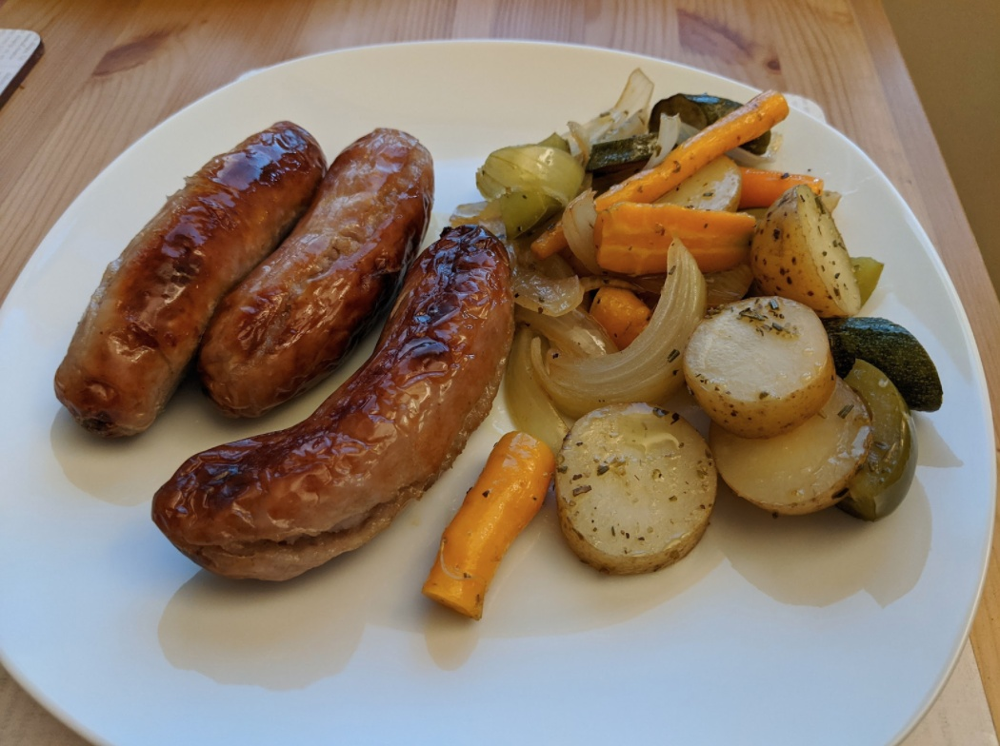

Sausage and veg roast
All in one easy dish

Ingredients
- 8 Pork sausages (2 each, or 3...)
- Red and yellow pepper
- 2 cloves of garlic
- Zucchini
- Red onion (or white/brown)
- Baby potatoes
- Olive oil
Instructions
- Chop up veg and put everything in one dish in the oven. Easy!
- Serve with some wholegrain mustard for the sausages.
Serves 4.